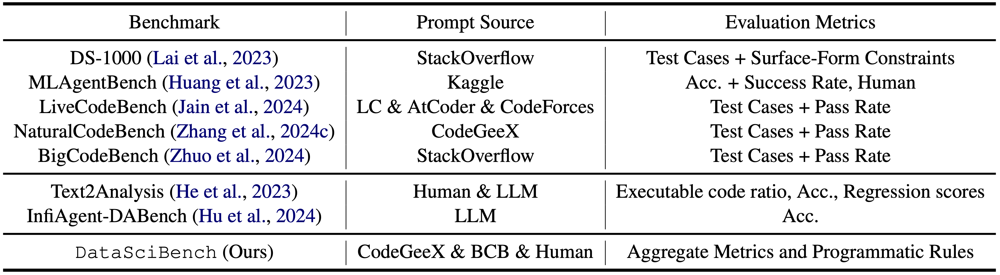
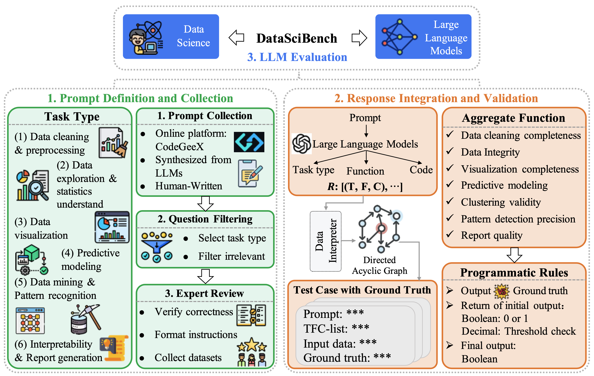
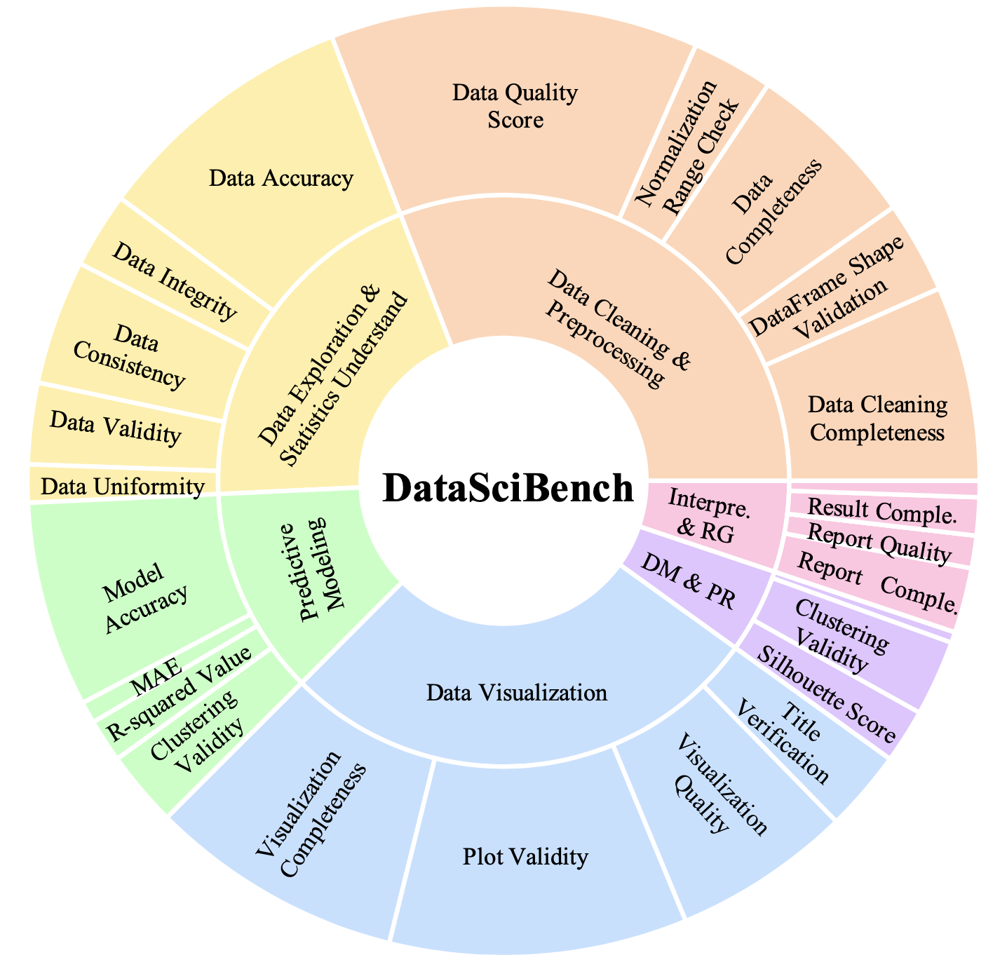

This paper presents DataSciBench, a comprehensive benchmark for evaluating Large Language Model (LLM) capabilities in data science. Recent related benchmarks have primarily focused on single tasks, easily obtainable ground truth, and straightforward evaluation metrics, which limits the scope of tasks that can be evaluated. In contrast, DataSciBench is constructed based on a more comprehensive and curated collection of natural and challenging prompts for uncertain ground truth and evaluation metrics.
We develop a semi-automated pipeline for generating ground truth (GT) and validating evaluation metrics. This pipeline utilizes and implements an LLM-based self-consistency and human verification strategy to produce accurate GT by leveraging collected prompts, predefined task types, and aggregate functions (metrics). Furthermore, we propose an innovative Task - Function - Code (TFC) framework to assess each code execution outcome based on precisely defined metrics and programmatic rules.
Our experimental framework involves testing 6 API-based models, 8 open-source general models, and 9 open-source code generation models using the diverse set of prompts we have gathered. This approach aims to provide a more comprehensive and rigorous evaluation of LLMs in data science, revealing their strengths and weaknesses. Experimental results demonstrate that API-based models outperform open-sourced models on all metrics and Deepseek-Coder-33B-Instruct achieves the highest score among open-sourced models.

Table 1: Comparison with related work. LC denotes LeetCode.

Figure 1: The overall framework of DataSciBench encompasses three key components:

Figure 2: Statistics of 6 task types and 25 aggregate functions in Task-Function-Code (TFC) list. DM & PR denotes Data Mining & Pattern Recognition. Interpre. & RG denotes Interpretability & Report Generation.
Table 2: Overall evaluation results for DataSciBench on all our curated prompts.
Figure 3: Overall score results of all tested LLMs.
Figure 4: Average Completion Rate results regarding different difficulty levels.
Figure 5: Pass@1 comparison of all tested LLMs between DataSciBench and HumanEval. Circle markers denote the API-based models while others denote various open-sourced LLMs. The green dashed ar- eas indicate the LLMs perform well on the two benchmarks and the orange solid areas indicate performances of the two datasets are relatively mismatched.
If you find our work helpful, please kindly cite our paper:
@article{zhang2025datascibench,
title={DataSciBench: An LLM Agent Benchmark for Data Science},
author={Zhang, Dan and Zhoubian, Sining and Cai, Min and Li, Fengzu and Yang, Lekang and Wang, Wei and Dong, Tianjiao and Hu, Ziniu and Tang, Jie and Yue, Yisong},
journal={arXiv preprint arXiv:2502.13897},
year={2025}
}